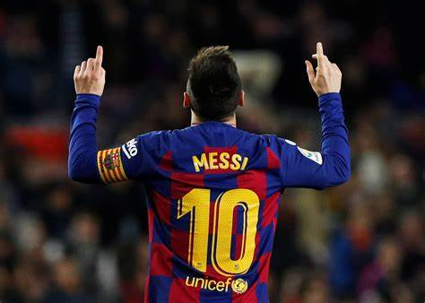
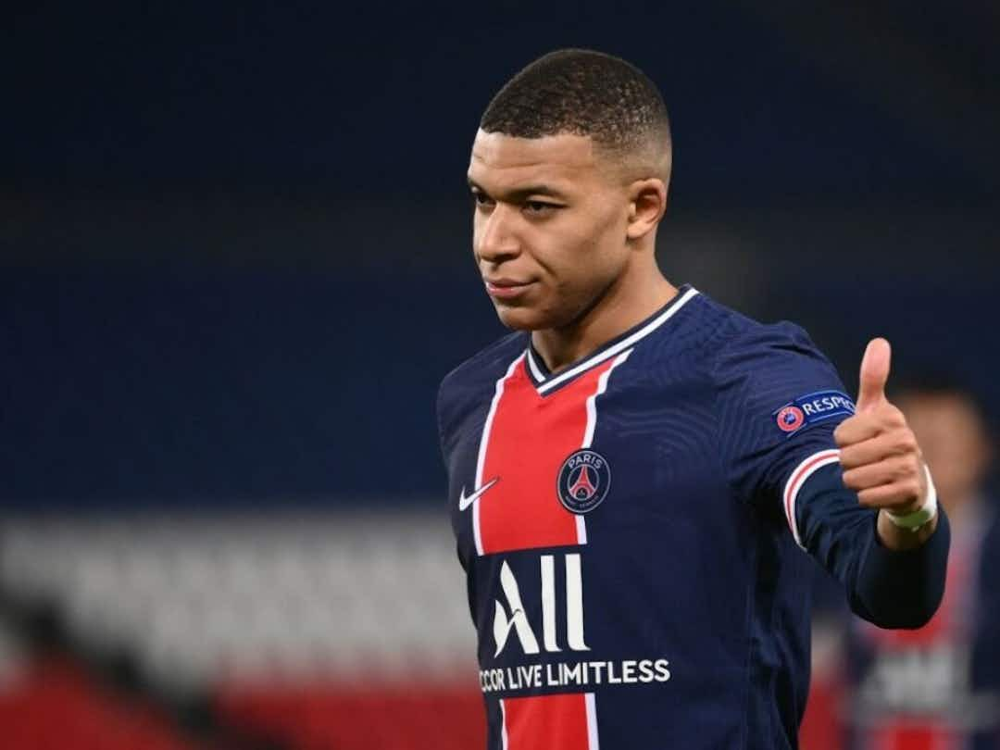
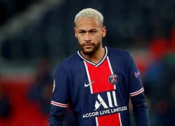
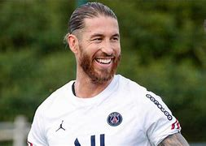

In the 2004–05 season Messi, then 17, became the youngest official player and goal scorer in the Spanish La Liga (the country’s highest division of football· Though only 5 feet 7 inches (1.7 metres) tall and weighing 148 pounds (67 kg), he was strong, well-balanced, and versatile on the field. Naturally left-footed, quick, and precise in control of the ball, Messi was a keen pass distributor and could readily thread his way through packed defenses. In 2005 he was granted Spanish citizenship, an honour greeted with mixed feelings by the fiercely Catalan supporters of Barcelona. The next year Messi and Barcelona won the Champions League (the European club championship) title. Messi’s play continued to rapidly improve over the years, and by 2008 he was one of the most dominant players in the world, finishing second to Manchester United’s Cristiano Ronaldo in the voting for the 2008 Ballon d’Or Messi helped Barcelona capture another treble during the 2014–15 season, leading the team with 43 goals scored over the course of the campaign, which resulted in his fifth world player of the year honour. He scored 41 goals across all competitions for Barcelona in 2015–16, and the club won the La Liga title and the Copa del Rey during that season. Messi topped that with 53 goals for Barcelona in 2016–17, leading the team to another Copa del Rey title. In 2017–18 he scored 45 goals, and Barcelona won the La Liga–Copa del Rey double once again. Messi scored 51 goals across all domestic competitions in 2018–19 as Barcelona won another La Liga championship. In late 2019 he won his sixth career Ballon d’Or and was named FIFA’s best male player of the year. In the 2020–21 season, Barcelona claimed the Copa del Rey title, the seventh of Messi’s career. He became a free agent in 2021, and financial issues—some of which were the result of La Liga rules—largely prevented him from re-signing with Barcelona. He left the club having set a number of records; notably, he was the leading goal scorer in the league’s history (474). Later in 2021 Messi signed with Paris St.-Germain, where he joined superstars Kylian Mbappé and Neymar, and that year he also received another Ballon d’Or. Buy messi shirt fromMessishirt.com
Kylian Mbappé was born in Paris and grew up in Bondy, one of the Parisian suburbs (banlieues) with working-class, mostly immigrant residents. His mother, Fayza Lamari, is of Algerian descent, and his father, Wilfried Mbappé, had immigrated from Cameroon. Wilfried Mbappé was a coach and director for the local club AS Bondy, and his son joined the club’s youth teams at age six. Kylian Mbappé quickly became known for his exceptional speed and ball handling, and, several years later, he was selected to train at Clairefontaine, France’s national academy for elite football players. He spent two years there, and a number of notable European clubs—among them Real Madrid, Arsenal, Chelsea, and Paris Saint-Germain (PSG)—expressed an interest in signing him. In 2013, at age 14, he signed with AS Monaco, which competes in Ligue 1 (France’s top-division league), and he played on the club’s youth and under-19 teams In 2016 at the UEFA European Under-19 Championship, Mbappé led France’s national team to victory. He played his first match with the French men’s national team in 2017, and he soon emerged as one of its main scoring threats. During the 2018 World Cup he became—at age 19—the youngest French player ever to score in World Cup competition. His goal gave France a 1–0 group-stage victory over Peru, and the French team advanced to the knockout stages of the tournament, where it eventually defeated Croatia 4–2 in the tournament’s final. Mbappé scored the last of his team’s goals, becoming the second teenager to score in a World Cup final. (Pelé was the first, in 1958.) Mbappé received the World Cup’s Best Young Player award for his performance, which included scoring four goals. In 2021 Mbappé scored the winning goal for France in the final of the UEFA Nations League tournament, defeating Spain. At the 2022 World Cup he scored eight goals in seven matches—the most of any player in the tournament, which won him the Golden Boot award. In the tournament final, Mbappé scored three goals and twice brought the French team from behind to tie Argentina, which was led by his PSG teammate Messi, but France ultimately lost on penalty kicks. With his three goals, Mbappé became the first player in history to have tallied four career World Cup final goals. When Mbappé made his debut with AS Monaco’s first team—on December 2, 2015—he was just a few weeks shy of his 17th birthday. He was at that time the youngest first-team player in the club’s history. (Thierry Henry had previously been the youngest.) Mbappé scored only one goal and saw limited playing time during the 2015–16 season. In 2016–17, however, he scored 15 goals, which tied him for fifth among Ligue 1 players, and AS Monaco captured the Ligue 1 title. Powered by Mbappé and teammate Radamel Falcao, the team defeated Manchester City and Borussia Dortmund in knockout matches as it advanced to the Union of European Football Associations (UEFA) Champions League semifinals, where it lost to Juventus.KylianMbappe.com
Neymar started his professional club career at Santos FC in 2009, where he quickly established himself as one of the most promising young talents in Brazilian football. In his first season with the club, he scored 14 goals in 48 appearances, helping Santos win the Campeonato Paulista, the São Paulo state championship. In the following seasons, Neymar continued to impress on the field‚ winning several individual awards, including the Campeonato Brasileiro Série A Player of the Year in 2011 and 2012. He also helped Santos win the Copa Libertadores, the most prestigious club competition in South America, in 2011. In his five-year career with Santos, Neymar scored 70 goals and assisted 35 times in 134 appearances. In 2013, Neymar joined FC Barcelona in Spain, where he formed a deadly attacking trio with Lionel Messi and Luis Suarez, known as "MSN." During his time at Barcelona, Neymar won two La Liga titles, three Copa del Rey trophies, and the UEFA Champions League. He scored 105 goals in 186 appearances for the Blaugrana.Internationally, Neymar was considered for the Brazilian side that participated in the 2010 World Cup in South Africa, but he was ultimately not included on the squad. Instead, he made his debut for the national team in August 2010, in a friendly match against the U.S., where he scored his first international goal in Brazil’s 2–0 win. He scored four goals for Brazil at the 2013 Confederations Cup, including one in the team’s 3–0 victory over Spain in the final, and won the Golden Ball as the tournament’s most valuable player as well as the Bronze Boot as its third highest scorer. Neymar starred for Brazil when his home country hosted the 2014 World Cup, scoring four goals in five games before he was knocked out of the competition with a fractured vertebra in the quarterfinals. Without the team’s most important player, Brazil lost by a shocking 7–1 margin to eventual-champion Germany in the semifinals. Despite his early exit from the tournament, Neymar won the Bronze Boot. At the Rio de Janeiro 2016 Olympic Games, he led the Brazilian men’s side to its first Olympic gold medal, scoring the winning penalty in extra time of the final match against Germany.
Sergio Ramos García (Spanish pronunciation: [ˈseɾxjo ˈramos ɣaɾˈθi.a];[A] born 30 March 1986) is a Spanish professional footballer who plays as a centre-back or right-back for Ligue 1 club Paris Saint-Germain. Known for his aggressive play, he is widely regarded as one of the greatest defenders of all time‚ having formerly played for Real Madrid for sixteen seasons, winning four UEFA Champions League titles along with two UEFA European Championships and the 2010 FIFA World Cup with the Spain national team· After emerging through Sevilla's youth academy and spending two seasons with the senior side, Ramos moved to Real Madrid in the summer of 2005· Since then, he went on to become a mainstay for Real Madrid, and had won 22 major honours, including five La Liga titles and four UEFA Champions League titles, becoming one of La Liga's top goalscorers from a defensive position. He played a crucial part in the build-up to all four UEFA Champions League wins, being named in the competition Squad of the Season each time· He also scored the equaliser in the 93rd minute of the 2014 UEFA Champions League Final· Ramos has been named to the FIFPro World11 eleven times; a record for a defender, and the third-most all-time. He has also been elected to the UEFA Team of the Year nine times, also a record for a defender and the third-most of any player. Additionally, Ramos has been named La Liga's Best Defender a record five times, and to the La Liga Team of the Season in 2015–16. In 2021, he joined Paris Saint-Germain on a free transfer.Internationally, Ramos represented Spain at four World Cups and three European Championships· He won the 2010 FIFA World Cup and the UEFA European Championship in 2008 and 2012, being named to the FIFA World Cup Dream Team in 2010, and the UEFA Euro Team of the Tournament in 2012· He made his first appearance for Spain at the age of 18 and, in 2013, he became the nation's youngest player to ever reach 100 caps. Ramos currently holds the record as the most capped player in the history of the Spain national team and is his country's ninth-highest all-time goalscorer. He also holds the record of most international victories for Spain with 131 matches won. In February 2023, Ramos announced his retirement from international football.ith new coach Luis Enrique, Ramos retained captaincy of the national team· He played in all four of Spain's 2018–19 UEFA Nations League group matches, becoming the nation's top scorer in the group with three goals – scoring once against England and twice against Croatia.Spain finished second in their UEFA Nations League Group, which saw them miss out on the 2019 UEFA Nations League Finals. In March 2019, Ramos scored the winner in Spain's first UEFA Euro 2020 qualifying match against Norway through another Panenka penalty in a 2–1 win. This was his tenth penalty of the season, scoring them all. It was also his fifth consecutive match scoring for Spain, which is a personal· Spain manager Enrique hailed Ramos as a 'unique player in history' after the match. In the second Euro 2020 qualification match, away to Malta, Ramos did not score for the first time in six matches for Spain – failing to extend his scoring streak. However, the match ended 2–0 to Spain which was his 121st win with La Roja, equaling the all-time record of Iker Casillas.[197] On 7 June 2019, Ramos broke the record of most international victories with 122, following a 4–1 victory against the Faroe Islands, scoring Spain's opening goal in the process. Three days later, ahead of the match against Sweden, Ramos received a plaque from the Spanish Football Federation to commemorate his record. The match ended with a 3–0 win for Spain, where he scored the first goal and extended his tally to 123 international victories.On 5 September 2019, Ramos scored from a penalty kick his 21st international goal to open the score in Spain's 2–1 away win over Romania in a Euro 2020 qualifier, which made him the joint 10th top scorer in the history of the national team, alongside Míchel. On 8 September, Ramos won his 167th cap for Spain in a 4–0 home win over the Faroe Islands in a Euro 2020 qualifier; with this appearance‚ he equaled Iker Casillas as Spain's most capped player of all time· On 12 October 2019, he became the nation's sole most capped player·
